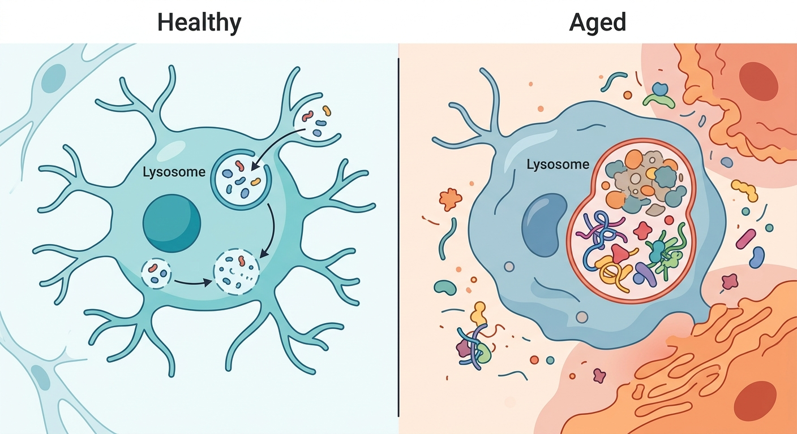
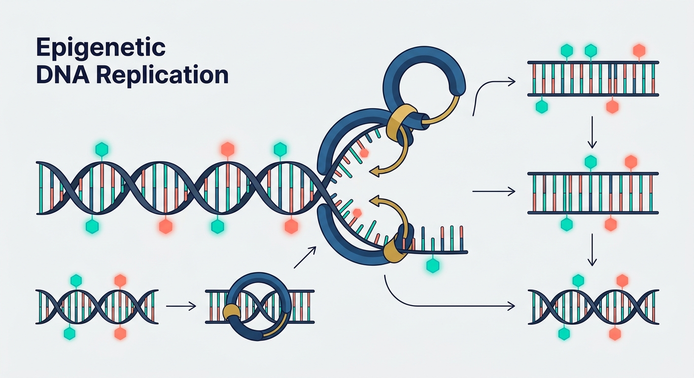
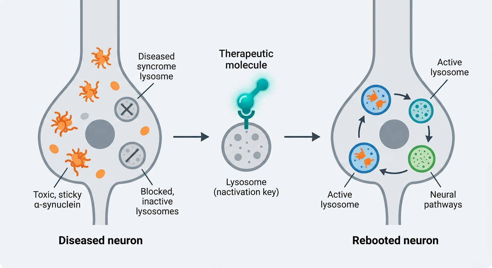

Why it matters: By mapping the lipidome of aging lysosomes, researchers have discovered that the brain's resident immune cells slowly choke on myelin debris over time—revealing a striking parallel to rare genetic pediatric diseases and opening up precise new cellular targets for reversing neurodegeneration.
Read Full Story →

Why it matters: By identifying a self-reinforcing feedback loop that preserves DNA methylation in vulnerable "genomic deserts," this study uncovers a key mechanism to halt epigenetic drift—a major driver of aging and cancer.
Read Full Story →

Why it matters: By targeting the Progranulin/Prosaposin pathway, AZP2006 restores lysosomal clearance to halt alpha-synuclein toxicity, offering a clinically advanced, de-risked therapeutic strategy for Parkinson’s and broader age-related neurodegeneration.
Read Full Story →